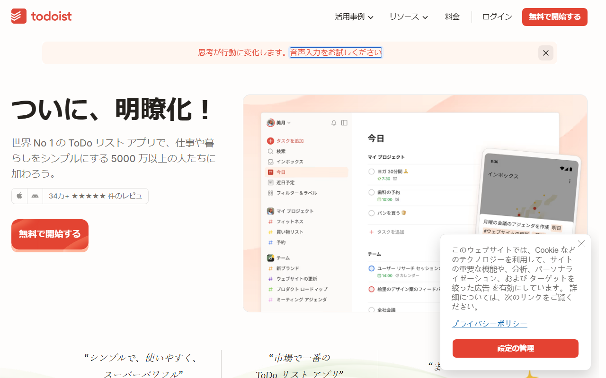

Todoistの料金プラン【2026年版】無料版と有料版の違い・選ぶポイント
Todoistは、個人やチームのタスクをまとめて管理するツールです。期限の設定や担当者の割り当てに対応します。無料のBeginnerもありますが、使える機能はプランごとに異なります。
この記事では、料金と無料版の制限、有料版との違いを紹介します。日本からの支払い方法と解約条件も扱います。
Todoistの料金プランは無料・個人・チーム向けの3種類
- Beginner：無料／個人プロジェクト5件
- Pro：月894円・年8,064円／個人向け
- Business：月1,280円・年11,520円／1人単位
- 無料枠：Beginnerは期限なし
- トライアル：Proは7日間
日本円の月払い・年払いと、各プランに含まれる機能を見比べられます。
Todoistの料金プランを月払い・年払いで整理
日本向けの公式価格は、Proが月894円または年8,064円です。Businessは1人あたり月1,280円または年11,520円。 USDで支払う場合の価格も別に設定されており、購入時の通貨によって請求額が変わります。

日本語の公式サイトには「無料で開始する」ボタンがあり、Web版とスマートフォン版の画面例も掲載されています。
Beginnerは無料で始められる
- 月払い：0円（$0）
- 年払い：0円（$0）
- トライアル：不要。期限なしの無料プラン
- 主な目安：個人プロジェクト5件、フィルター3件、履歴1週間
有料プランの試用版ではないため、無料枠の範囲なら期限を気にせず利用できます。
Proは個人向けの有料プラン
- 月払い：月894円。USDでは月$7
- 年払い：年8,064円。USDでは年$60（月$5相当）
- トライアル：7日間
- 主な目安：カレンダーレイアウト、全履歴、カスタムリマインダーが必要な個人
日本向けの円建て価格は、USD価格を為替換算した金額ではありません。購入画面がJPY表示なら、予算には公式の円建て価格を使います。
Businessはユーザー単位で課金される
- 月払い：1ユーザーあたり月1,280円。USDでは月$10
- 年払い：1ユーザーあたり年11,520円。USDでは年$96（月$8相当）
- トライアル：通常は14日間。ただし現在は一時停止中
- 主な目安：共有ワークスペース、権限管理、一元請求が必要な組織
チームの年間予算は、年11,520円に契約ユーザー数を掛けて計算します。Businessのトライアル再開が案内されるまでは、試用期間を組み込まずに導入日程を立てましょう。
レガシープランは対象条件が限られる
Proのレガシープランは、2022年6月より前から同じ契約条件で利用を続けている人などが対象です。プラン・請求周期・決済事業者の変更や、解約・返金によって資格を失う場合があります。
レガシー料金は一律額が公開されていないため、現在の金額は契約画面で確かめてください。標準Proへ移行した後の日本向け価格は月894円または年8,064円です。
新規契約なら、標準プランの価格が基準です。既存契約では、現在の請求額とレガシー資格の維持条件を確かめてください。
無料のBeginnerでできること・制限・トライアルの違い
Beginnerは期限なしの無料プランです。Proの7日間トライアルと違い、期間終了後に有料契約へ自動移行しません。
Beginnerは期限なしで使える無料プラン
Beginnerで扱える個人プロジェクトは5件、フィルターは3件です。1週間分のアクティビティ履歴や、日付と時刻を設定したタスクへの自動リマインダーも無料で使えます。
無料で困りやすい制限を先に確認する
Beginnerにはカレンダーレイアウトがありません。カスタムリマインダーは有料プランの機能で、時間・位置情報・繰り返しを条件に指定できます。
個人プロジェクトが5件を超えるなら、Proが候補になります。カレンダー表示や細かな通知条件が必要な人にもProが向きます。
ProとBusinessのトライアルは期間が異なる
Proのトライアルは7日間で、期間中にキャンセルしなければ終了後に有料契約が始まります。Businessの通常の試用期間は14日間ですが、現在は一時停止中。再開後の自動課金条件は、申込画面や新しい案内が公開されるまでは断定できません。
Beginnerは期限なく無料で使えます。Proのトライアルは、期間終了後に課金へ移る仕組みです。
有料プランで増える機能と無料版との違い
無料版と有料版では、管理できる件数と履歴の範囲が異なります。カレンダー表示や通知機能にも差があり、Businessではチーム管理が加わります。
Proで上限と個人向け機能が増える
Proでは、個人プロジェクトが5件から300件へ、フィルターが3件から150件へ増えます。履歴は1週間から全期間になり、カレンダーレイアウトとタスクの所要時間も利用できます。
日付と時刻による自動通知に加え、日時・場所・繰り返し条件を指定するリマインダーもProの対象です。
Businessは共有ワークスペースと管理向け
Businessでは、共有チームワークスペースに加え、役割・権限も管理できます。詳細なアクティビティログや一元請求にも対応し、チームプロジェクトの上限は500件です。
共同作業の有無だけでは判断できません。管理者がチーム領域やアクセス権をまとめて管理し、一元請求にしたいかが基準です。
有料化する前に必要機能を1つずつ確認する
個人プロジェクトが5件を超える人や、古い履歴・カレンダー表示・細かな通知条件が必要な人にはProが向いています。組織の権限管理や一元請求が必要なら、Businessが候補です。
今の使い方で足りない機能から候補を絞れば、使わない機能のために上位プランを選ばずに済みます。
リマインダーとガントチャートは無料で使える？
リマインダーは無料でも使えますが、設定できる条件に差があります。ガント表示についてTodoist公式が案内しているのは、外部サービスとの連携です。
基本リマインダーとカスタムリマインダーは範囲が違う
Beginnerでも、日付と時刻を設定したタスクには自動リマインダーが届きます。一方、ProまたはBusinessのカスタムリマインダーでは、時間・位置情報・繰り返しを条件に指定できます。
ガントチャートは外部サービスの料金も確認する
Todoist公式がガント表示の方法として案内しているのは、外部のWebサービス「Ganttify」との連携です。料金や利用条件はTodoistとは別なので、無料機能には含めずに考えます。
ガント表示が欠かせない人は、外部サービスの料金と使い方も調べておきましょう。
日本からの支払い・請求書・消費税を確認する
WebでTodoistと直接契約すると、JPYで決済でき、JCBを含む複数のカードやウォレットが使えます。Proをアプリ内で購入する場合は、価格・決済手段・証憑に各ストアの条件が適用されます。
日本円決済とJCBを含む支払い方法に対応する
Web直販の対応通貨にはUSDとJPYが含まれます。主な支払い方法は次のとおりです。
- Visa／Mastercard／Amex
- Discover／Diners／China UnionPay
- JCB／Link／Apple Pay
ProはApp StoreやGoogle Playからも購入できますが、価格と決済条件は各ストアによって変わります。BusinessはWebから直接契約します。
Todoistには日本語UIと公式の日本語ヘルプセンターがあります。ただし、有人窓口の対応言語までは公開情報から断定できません。
請求書は請求設定からダウンロードできる
Todoistと直接契約した場合、請求書はWeb版かデスクトップ版の「Invoice History」から取得します。App StoreやGoogle Playで購入したProでは、各ストアの領収書を使い、Todoistの請求書は発行されません。
消費税やインボイスの扱いは税理士へ確認する
請求書を取得できることと、日本の適格請求書の要件を満たすことは同じではありません。消費税・インボイス・経費処理の扱いは、契約経路と証憑を示して税理士に確認してください。
購入前に、Web直販とアプリ内購入のどちらを使うか決めます。表示通貨と最終請求額を見たら、決済手段と証憑も確かめてください。
Todoistの料金設計が合わないときの比較ポイント
Todoistで足りない機能が分かれば、他のタスク管理ツールと比べる内容もぶれません。個人なら無料枠、チームなら権限管理と1人あたりの費用が中心です。
個人の基本管理なら無料枠を基準に比べる
Beginnerでは、個人プロジェクト5件、フィルター3件、履歴1週間まで使えます。基本リマインダーも無料です。
比べる対象は、自分に足りない機能です。無料かどうかだけでなく、プロジェクト数の上限・カレンダー表示・通知設定を比べてください。
チーム利用は1人あたりの年間費用で比べる
Todoist Businessの年払いは、1ユーザーあたり年11,520円です。チーム全体の費用は、この金額に人数を掛けた額。共有ワークスペースや役割・権限の管理に加え、詳細なログと一元請求が必要かも比べます。
各自が個人タスクを管理するだけなら、Business固有の管理機能に追加料金を払う価値があるかを考えます。
Todoistと他のツールを詳しく比べる
TickTickも候補の1つですが、料金や機能差は未検証のため、ここでは比較しません。
解約・ダウングレード・返金の条件
Todoistを解約しても、有料機能は料金を支払った請求期間が終わるまで利用できます。返金条件と申請先は、月払い・年払いに加え、購入経路によっても異なります。
解約後も請求期間末までは有料機能を使える
ProとBusinessは、解約後も請求期間末まで有料機能が残ります。次回の更新を止めたい場合は、更新日より前に手続きを済ませます。
年払いと月払いでは返金条件が異なる
Web直販またはGoogle Playの年払いプランには、30日間の返金申請期間があります。起点は購入日または更新日。月払いは原則として返金対象外です。
App Store購入の返金可否はAppleが判断し、Microsoft Store購入は返金されません。Businessの年払いは、チームをキャンセルしてからTodoistへ返金を申請します。
ダウングレード前に上限超過データを確認する
ProからBeginnerへ下げてもデータは保持されます。ただし、使える範囲は次のように変わります。
- 5件を超える個人プロジェクト：古いものから閲覧専用
- 上限を超えたフィルター：残るが、内容は開けない
- 有料プラン専用の項目：追加・編集できない
請求期間が終わると、BusinessはBeginnerへ移行し、既存のプロジェクトとタスクは引き続き使えます。メンバー権限や上限超過プロジェクトの扱いは公開情報だけでは確定できないため、移行前にデータと権限を整理しましょう。
年払いを選ぶ前に、購入経路ごとの返金窓口と次回更新日を控えておくと、解約時に迷いません。
まとめ：無料版の制限と必要機能からプランを決める
Beginner、Pro、Businessは、料金と使える機能が異なります。個人向けの機能が必要か、組織管理まで求めるかで選びます。
迷ったらBeginnerから始める
- Beginner：個人プロジェクト5件とフィルター3件まで
- Pro：カレンダー表示や全履歴、細かな通知が必要
- Business：共有領域や権限、一元請求が必要
契約前の最終チェック
日本向けのProは月894円または年8,064円です。Businessは1人あたり月1,280円または年11,520円。Businessのトライアルは現在停止中なので、試用を前提に導入時期を決めるのは避けましょう。
契約前に押さえたいのは、Web直販とアプリ内購入の違いです。購入経路ごとの返金条件も、解約に備えて見ておきましょう。
まず無料枠で必要な機能が足りるかを見ます。不足が分かってからProまたはBusinessを選べば、不要な支払いを避けられます。